ジモデン登録の
電気工事店なら
専用コンセント増設
10mまで
22,000円(税込)
※予備ブレーカーがない場合は追加費用が必要
※モール部材費は除く
Point! プロが解説
コンセント増設工事費用 プロが解説！

コンセント増設の疑問を解決
工事費用と概要


コンセント交換費用と業者選びのポイント
Index
01 コンセント増設費用例
例１ 一般コンセント増設費用
掃除用など電気容量の小さなコンセントを増設する工事。屋外に設置する場合は防水型コンセントを使用。近くのコンセントから配線を行います。
配線工事費(コンセント・電線を含む)
- 露出配線10mまで
- 16,500円
- 露出配線延長1m
- 1,100円
例2 専用コンセント増設費用
エアコン・電子レンジなど、電気容量の大きなコンセントは分電盤から配線を行います。分電盤内に余っている子ブレーカーがない場合は、子ブレーカーを増設する必要があります。
現在使用している分電盤が古く、子ブレーカーの空きがない場合は分電盤を新品へ交換することで、耐用年数を超えたブレーカーが全て新品になり、子ブレーカーの数も増やすことができます。
分電盤の交換は別ページ【分電盤の交換費用】を参考にしてください。
古い住宅ではエアコン・キッチン機器用の専用コンセントが設置されていない場合が多く、エアコンを複数台増やすなど、大きな電気を使用するには分電盤の交換工事と幹線を新たに配線（太い線に張り替え）するなど、大きな電気工事が必要となることがあります。
配線工事費(コンセント・電線を含む)
- 露出配線10mまで
- 22,000円
- 露出配線延長1m
- 1,100円
ブレーカー増設工事費
- 100Vブレーカー追加
- 1,650円
- 200Vブレーカー追加
- 3,300円
- 分電盤交換
- 55,000円～
02 エアコン専用コンセント増設工事の概要と費用相場
-
1 内線規程によりエアコンには専用コンセントが必要
エアコンを新たに設置したり、エアコン取替時に『専用コンセント』が必要と言われることがあります。
エアコン専用コンセントとは、分電盤内の小さなブレーカーからエアコン用コンセントまで１本のケーブルで配線を行い、１つの小さなブレーカーをエアコン専用として使用することです。エアコン専用コンセントの例 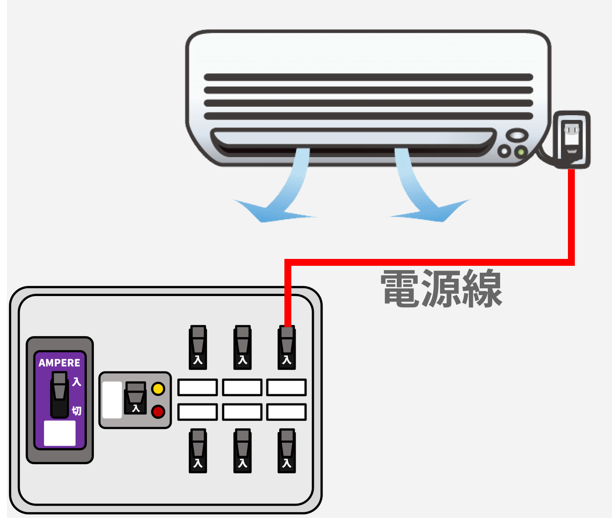築30年程の住宅では、エアコンが現在ほど一般的ではなく、エアコン専用コンセントが設置されていないことがあり、部屋の一般コンセントをエアコンに使用している場合があります。そのような場合は分電盤からエアコンまで配線を行い、コンセントを設置する『専用コンセント』の増設工事が必要となります。エアコン設置業者へ専用コンセントを設置してもらう、または電気工事業者へ依頼する方法があります。
エアコン専用コンセントではない例 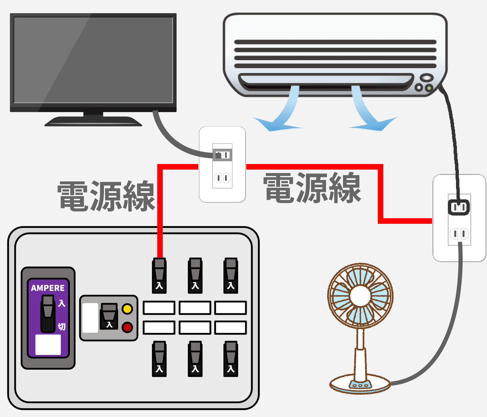 -
2 エアコン専用コンセント増設工事の費用の目安
エアコンに限りませんが、新しく専用コンセントを設置する工事費用は、一般的な住宅で22,000円～55,000円程（税込）となります。工事費用に幅があるのは、配線の長さ、配線方法、予備ブレーカーの有無などにより、工事費・材料費が変動するからです。
03 キッチン専用コンセント増設工事の概要と費用相場
-
1 キッチンで頻繁にブレーカが落ちる症状を解消する工事
キッチンで電子レンジや電気ポットを同時に使用すると、分電盤内の小さなブレーカが落ちてしまうことがあります。
築20年程の住宅でしたらキッチンには電子レンジ用、冷蔵庫用の専用コンセントが設置されており、電化製品の同時使用でも問題はありませんが、築30年より古い住宅ではキッチン、ダイニング、リビングの照明とコンセントで１つの回路など、その時代は広範囲で１つの回路が主流のため、消費電力の大きい電化製品をキッチンで同時に使用することができません。キッチンに専用回路がない状態 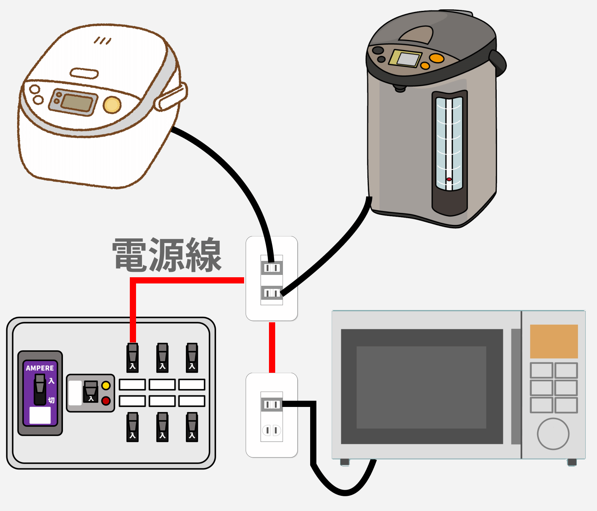キッチンで電化製品を同時に使用してもブレーカーが落ちないようにするには、電子レンジの専用コンセントを設置することをおすすめします。電子レンジは消費電力が1,000W～1,500W程となり、１つの回路で使用できる電気の大半を使うことになりますので、この方法でブレーカーが落ちることを防ぐことができます。
キッチンへ専用回路を増設する 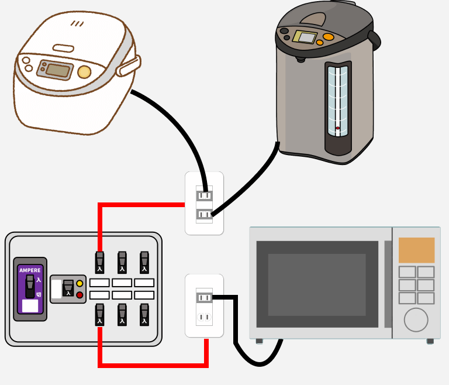 -
2 キッチン専用コンセント増設工事の費用の目安
キッチンへ専用コンセントを設置する工事費用は、考え方はエアコンと同様で、一般的な住宅で22,000円～55,000円程（税込）となります。工事費用は配線距離、配線方法、予備ブレーカーの有無などにより工賃、材料費が変動します。
04 電気容量の少ない一般コンセントの増設工事
-
1 屋外コンセント・掃除用などの一般コンセント増設工事費用
電気容量の少ない機器（掃除機やスマホ充電用など）へのコンセント増設工事は、近くのコンセントから配線を行い、コンセントを増設します。
一般コンセントの増設費用は、基本は専用コンセント増設工事費用と同じ考え方となります。厳密には専用コンセントよりも細い電線を使用しますが、材料費の差はわずかなため工事費用に大差はありません。一般コンセント増設工事は、近くのコンセントから電源を取るため、分電盤の工事は不要（無関係）となります。屋外に設置するコンセントは防水型を使用しますので、コンセント部材代が屋内用よりも高くなります。
05 専用コンセント増設工事の費用詳細
コンセント交換などの単純な工事とは異なり、専用コンセント増設工事は配線の長さ、配線の施工方法、難易度、分電盤内の予備ブレーカーの有無により、増設工事費用が大きく異なります。
また、新築時とは異なり、後から配線を行う工事となりますので、壁内や天井内で配線を行う隠蔽配線が困難、又は実際に工事をしてみないと隠蔽配線ができるか分からない場合もあります。
プロの電気工事士なら誰でも隠蔽配線を行いたいと思うものですが、一般的な建物は後から配線作業ができるように作られていませんので、明確に回答ができないことがあります。
-
1 専用コンセント増設工事費用
工事費用は３つの項目から算出します- 配線の長さ
- 配線方法（露出配線・モール施工）
- 予備ブレーカーの有無
-
配線の長さ
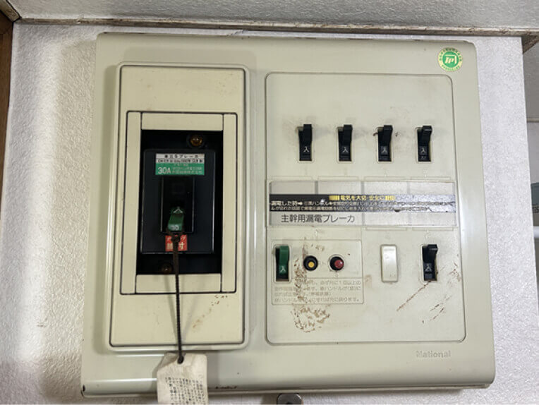 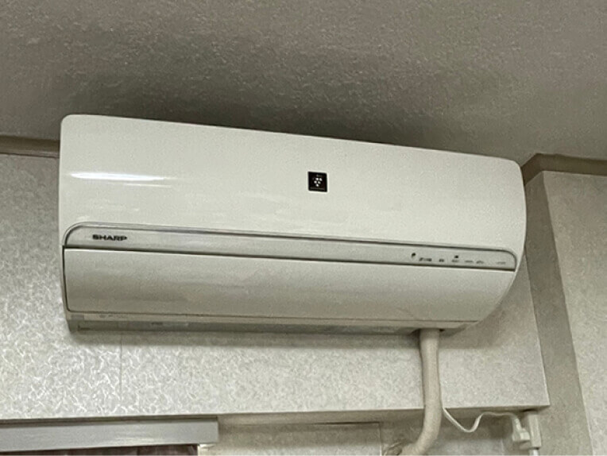 分電盤から専用コンセントが必要な機器までの長さが近いほど安く、遠くなるほど高くなります。また、１階の分電盤から２階のエアコンなど、階をまたぐ場合も工事費用が高くなります。
配線工事費(コンセント・電線を含む)
- 露出配線10mまで
- 22,000円
- 露出配線延長1m
- 1,100円
-
配線方法 (露出・モールなど)
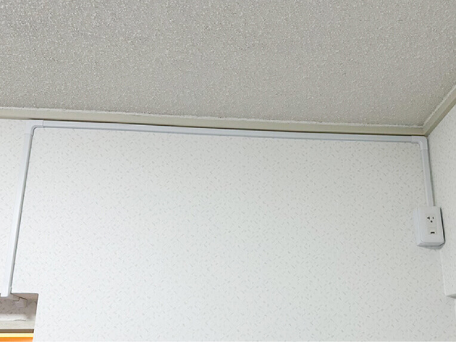 モール配線 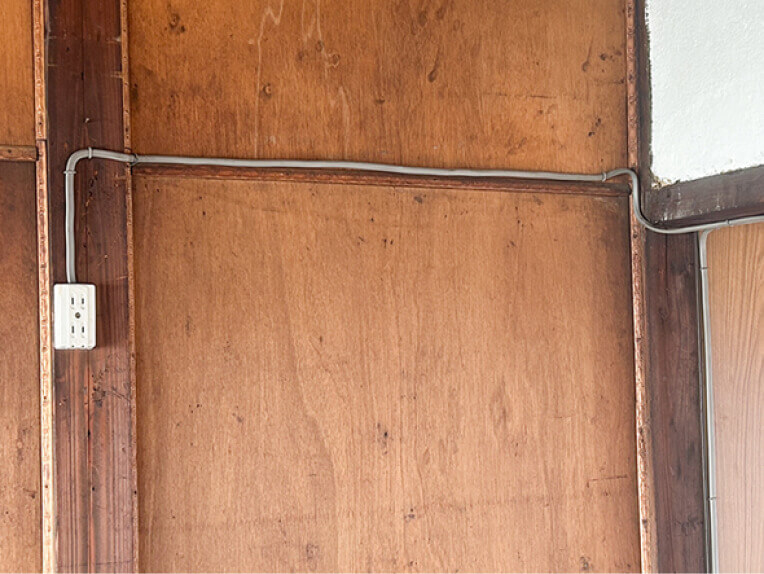 露出配線 新築時とは異なり、後から配線を増やす工事では、電線を天井内や壁内に通すことが難しいことが多くあります。
そのような場合は電線を壁や天井に這わせて配線を行います。電線がむき出しの露出配線と、モールを使用して目立たないようにする方法もありますが、モール施工の場合は部材費が必要となります。モール工事費 (２号モール)
- 1mにつき
- 1,100円
-
予備ブレーカーの有無・
空きスペースの有無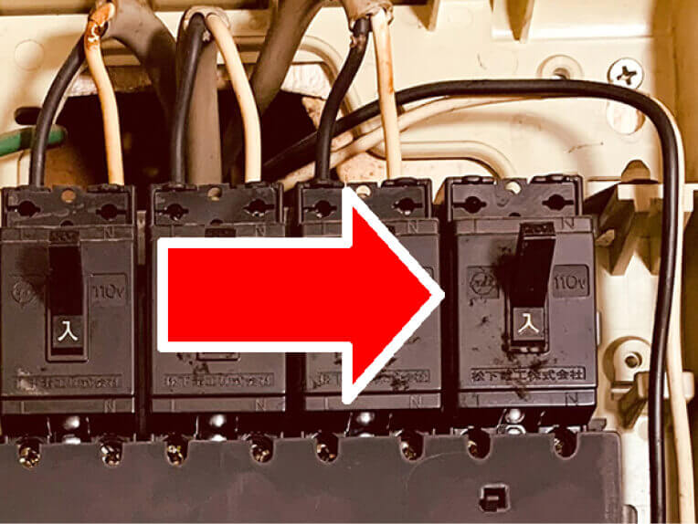 予備ブレーカーあり 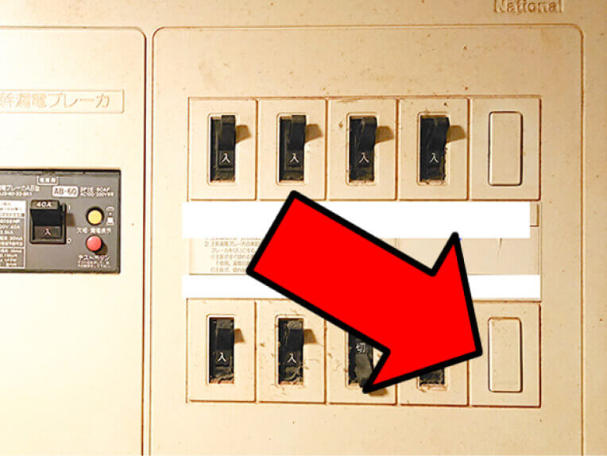 空きスペースあり 予備ブレーカーとは、電線が接続されておらず、余っているブレーカーのことです。空きスペースとは、ブレーカーを追加するスペースのことです。
予備ブレーカーが余っている場合は専用コンセントとして使用できますが、200Vが必要な時は200V対応のブレーカーであるか確認が必要です。
予備ブレーカーがない場合は空きスペースにブレーカーを設置します。空きスペースもない場合は、分電盤の隣に小さな箱を設置して回路を増やす、又は大きな費用が必要となりますが、回路数の多い分電盤へ交換する方法もあります。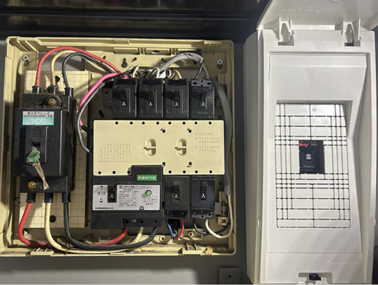 分電盤の近くに増設盤を設置する 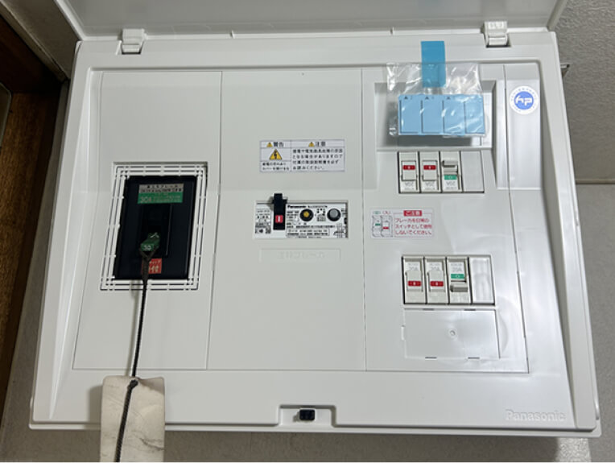 分電盤ごと交換する ブレーカー増設工事費
- 100Vブレーカー追加
- 1,650円
- 200Vブレーカー追加
- 3,300円
- 増設盤設置
- 8,800円~
- 分電盤交換
- 55,000円~
06 どこへ・どのように頼めばよいのか？
-
どこに頼めばいい？
-
いくらくらいかかる？
-
高額請求されていない？
第一種電気工事士が解説
コンセント増設工事の見積りを行うには、必ず現地確認が必要となります。見積りだけで費用が発生する業者もありますので、見積り依頼前に確認しましょう。
電気工事業者
Expert大規模施設や住宅などの電気工事を行う事業者。 事務所や倉庫で営業しているため、近くで営業していてもほとんどの方は気付かないと思いますが、精度に加えスピードを求められる仕事をこなしているので本物のプロと言えますし、迅速に動いてもらえるでしょう。
- 相場
-
専用コンセント増設工事
10mまで 22,000円～ - 依頼方法
- 電気工事業者のホームページにはコンセント増設工事費用を明確に記載していない場合が多いので、問い合わせページから見積りを依頼しましょう。

街の電気屋
Electrianパナソニックのお店やアトムなどの家電販売と小規模電気工事を行うお店です。街の電気屋はしっかりと料金表があり、高額請求されることはありません。ただし、見積りのために来てもらうだけで出張費や見積料を請求される可能性があります。また、コンセント増設工事は相場より高めとなることが多いようです。それでも高額請求がない、対応が早い点でオススメです。
- 相場
-
専用コンセント増設工事
10mまで 25,000円～ - 依頼方法
- 現地確認（見積り）をしてもらうだけで費用が発生する場合があります。まずは問い合わせをして、おおよその金額を聞いてみましょう。
インターネット集客業者
Internet
くらしのマーケットやミツモアなどの集客業者です。実際に工事を行うのは提携している電気工事店となります。クチコミが掲載されているので安心感があります。
インターネット集客業者を通すと集客業者へ手数料が発生しますので、コンセント増設工事は割高となるでしょう。また、集客業者の中には、3000円～などお値打ち感を打ち出して、実際には高額の費用を請求する業者もありますので注意して下さい。
- 相場
-
専用コンセント増設工事
10mまで 22,000円～ - 依頼方法
-
金額が明確な【くらしのマーケット】又は、【ミツモア】から依頼する。
その際、『現地確認後の見積り』としか言わずに目安の金額を教えてくれない業者や、『〇〇円～です』としか言わずに目安を教えてくれない業者は避けた方がよいでしょう。

電気工事施行管理20年の経験
保有資格：第一種電気工事士、１級電気施行管理技士。
電気工事の経験20年、独立後は自力で作成したホームページ集客のみで法人設立後も3年間黒字を維持。